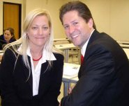

Ammission Call
Congratulations to Ammon who was called to the Tempe Arizona mission in March. He will be leaving on June 25th. "He is spending lots of time studying and doing odd jobs here and there to make some money," says Karen. "And he goes to the temple whenever he can."
Cluffer Kids Graduate
Kaylynn, who turned 18 on May 19th, will graduate from high school on June 6th. She has already graduated from seminary and is now applying for jobs everywhere in hopes of having something to keep her busy until her missionary returns!
Braden Hits the Road
This March Braden turned 15 and got his driving permit! According to his mother, Karen, he is "doing great in school and ready for summer!"
Cluffer Report
"The summer will be a wonderful change for our family," says Karen. "We are looking forward to being up the hill more. Jazzy, who is 12, is enjoying her last days of 6th grade. Canyon is 7 and looking forward to searching for arrowheads and other treasures around our house all summer. Dyson is turning 2 in July and very happy. Our house in Coquille sold so we are just waiting to come upon a great deal here so we can get into something close to town. We would love any visitors that wants to venture up to our area. We don't have room in the house, but it is such a fun camping spot! Bring the bug repellent though!"
Beals House drama, moving. It is spring here and my roses are blooming.
House drama, moving. It is spring here and my roses are blooming.
Sun Diego?
Every time relatives come to visit, the clouds pick up. Despite San Diego's reputation, the sun only came out after the relatives left. See photos from recent family visits (at least one family came to visit per month)
Business Hats
Here's our sign, hats, and shirts. Remember, people in these parts are big into hunting, so the hats are going over well. We think we'll change the background color of the sign to the color of the hat.
Football
dallas is playing football this year! and have already started practice for a gold beach camp, then the real practice starts in August.
 Got a problem or a question? The Cluff Family Times' lifestyle guru can solve all of your personal, romantic, financial, spiritual, decorating and fashion dilemmas. The answers are only a click away. Do you have a question for our agony aunt? Send it to: submissions@tuffcluff.com Got a problem or a question? The Cluff Family Times' lifestyle guru can solve all of your personal, romantic, financial, spiritual, decorating and fashion dilemmas. The answers are only a click away. Do you have a question for our agony aunt? Send it to: submissions@tuffcluff.com
Get-Togethers We'd like to plan a fun family reunion on the high seas with a big Tuffcluff family cruise in 2009 (for Dad's 70th birthday) or 2010 (more time to plan/save). The destination shortlist includes Alaska and Mexico but we're still open to all suggestions. What we need to know now is how feasible this is for everyone and which cruise/date you would prefer. Please let us know what you think ASAP. And just in case you are still unaware, the annual family reunion for the Dennis and Diana Cluff family takes place each year in Ashland on and around the Fourth of July. So get yourself to the party!
We'd like to plan a fun family reunion on the high seas with a big Tuffcluff family cruise in 2009 (for Dad's 70th birthday) or 2010 (more time to plan/save). The destination shortlist includes Alaska and Mexico but we're still open to all suggestions. What we need to know now is how feasible this is for everyone and which cruise/date you would prefer. Please let us know what you think ASAP. And just in case you are still unaware, the annual family reunion for the Dennis and Diana Cluff family takes place each year in Ashland on and around the Fourth of July. So get yourself to the party!
Have Your Say
Don't agree with something we've said? Want to write an editorial? Have something to report? Want to see your article in print? It's easy! Just send your submissions and pictures via email to: info@tuffcluff.com
Next Issue
 The Summer 2008 edition of The Cluff Family Times will be slimmer than normal because we are trying to encourage blogging.
The Summer 2008 edition of The Cluff Family Times will be slimmer than normal because we are trying to encourage blogging.
If you're planning on heading out on the open road you're probably looking for something to keep the rugrats in the back of the car busy on the trip - and Tuffcluff has just the thing! Check out our printable list of Clufftastic CAR GAMES for the whole family!
|
|
Diana's Bday Dane and Karen's family sang me a many verse birthday song about me being a bit different with UFO's getting me in their space ship giving me tests and me screaming RADIATION TO THE CROTCH. They sang the song because I always scream out when anyone is near our low microwave that is at the level of adults upper legs, MOVE AWAY OR YOU WILL GET CROTCH CANCER! Poor Karen and Nial's newest girlfriend, Elle, just look at me with shock every time I scream out the words.
Last night we had Chinese food brought in with our fancy table setting and mood music. Dad brought me red roses and my Dad a vase of fancy spring flowers, with a big fancy turquoise ring from New Mexico, made by the Navajo's in the trading post my relatives own.
My Dad, Lavona, Dane's family, Nial, twins, Shira and Dad and I got to eat,laugh and listen to my Dad speck Navajo to us. It will be great to have you visit Indian land this summer and then us.
Dane and Karen's family sang me a many verse birthday song about me being a bit different with UFO's getting me in their space ship giving me tests and me screaming RADIATION TO THE CROTCH. They sang the song because I always scream out when anyone is near our low microwave that is at the level of adults upper legs, MOVE AWAY OR YOU WILL GET CROTCH CANCER! Poor Karen and Nial's newest girlfriend, Elle, just look at me with shock every time I scream out the words.
Last night we had Chinese food brought in with our fancy table setting and mood music. Dad brought me red roses and my Dad a vase of fancy spring flowers, with a big fancy turquoise ring from New Mexico, made by the Navajo's in the trading post my relatives own.
My Dad, Lavona, Dane's family, Nial, twins, Shira and Dad and I got to eat,laugh and listen to my Dad speck Navajo to us. It will be great to have you visit Indian land this summer and then us.
Rough Boys Our 6' 16 year old twins just love to punch, kick, stomp and wrestle each other. They have done this since the womb. It means I love you. It is done in a matter of fact way, such as, they are looking straight ahead, walking side by side to the bus stop. One twin will grab snow not even turning his head, bending down or breaking his stride. He gives his brother the hard snowball treatment. The smashed brother doesn't act like anything has happened, as he grabs snow and repeats what has been done to him. They keep walking, silent, as if nothing unusual ever happens in life.
Most of the time snow isn't here, so it is punches, kicks, and stomps that would send people to the hospital, that go on between them. They don't get away with it all the time, as we have had a rash of broken toes and fingers the last month. I guess men do bold, painful things to be men. The noise that takes place when they do it, is as good as the noise in a movie sound tract. Huge slaps, stomps and punch sounds. All the men in the family just shake their heads in amazement of their strength. I guess it doesn't hurt most of the time and is their way of having good relations. If something is broken, they are so resistant to pain, they limp or work slower for a few days but they never slow down.
Our twins always have the same things happen to them, if one breaks a toe the other will too, and so it has been, one limps with a broken toe then the other does, then it is the fingers turns, then they have a broken finger and toe at the same time.
I keep telling them they are too powerful now to keep their old ways. You have the strength of men now and more strength than most men. They spend each week serving people all around them by moving them, yard work, putting in the garden, car repairs, doing some service that someone needs. I don't have them home enough to help me much because so many calls come in for them to help out someone. When they get regular working jobs I will never see them.
I am so glad they have never been fighters with each other or anyone else. It is scary to think what could go on if they did fight. I tell them never to punch each other in public, as people won't think of it as love pats between twins and will most likely call 911 or run.
Our 6' 16 year old twins just love to punch, kick, stomp and wrestle each other. They have done this since the womb. It means I love you. It is done in a matter of fact way, such as, they are looking straight ahead, walking side by side to the bus stop. One twin will grab snow not even turning his head, bending down or breaking his stride. He gives his brother the hard snowball treatment. The smashed brother doesn't act like anything has happened, as he grabs snow and repeats what has been done to him. They keep walking, silent, as if nothing unusual ever happens in life.
Most of the time snow isn't here, so it is punches, kicks, and stomps that would send people to the hospital, that go on between them. They don't get away with it all the time, as we have had a rash of broken toes and fingers the last month. I guess men do bold, painful things to be men. The noise that takes place when they do it, is as good as the noise in a movie sound tract. Huge slaps, stomps and punch sounds. All the men in the family just shake their heads in amazement of their strength. I guess it doesn't hurt most of the time and is their way of having good relations. If something is broken, they are so resistant to pain, they limp or work slower for a few days but they never slow down.
Our twins always have the same things happen to them, if one breaks a toe the other will too, and so it has been, one limps with a broken toe then the other does, then it is the fingers turns, then they have a broken finger and toe at the same time.
I keep telling them they are too powerful now to keep their old ways. You have the strength of men now and more strength than most men. They spend each week serving people all around them by moving them, yard work, putting in the garden, car repairs, doing some service that someone needs. I don't have them home enough to help me much because so many calls come in for them to help out someone. When they get regular working jobs I will never see them.
I am so glad they have never been fighters with each other or anyone else. It is scary to think what could go on if they did fight. I tell them never to punch each other in public, as people won't think of it as love pats between twins and will most likely call 911 or run.
scott Scott was released as Bishop on Sunday. It was a lot harder for him to be released than I expected. He handled it very well, but I�m afraid that to my surprise I came to pieces. The Stake President invited Scott to bear his testimony and then for me to bear mine. I could hardly do it, and not at all beautifully. It suddenly hit me that I would be leaving these wonderful people I have lived with and loved for the past ten years. Not easy. I am doing better now that I have recovered form the post weeping headache I had. I really am very excited for Scott. This is a fantastic job for him that he already loves. He actually started it mid March but we will all stay here until the end of the school year. He will travel a tiny bit during the next two months anyway. We put a for sale sign up in the yard yesterday and hope to move in early June. We know this is the right thing to do, it just isn�t an easy thing to do. I am confident that once we get to NC things will fall into place and we will be very happy there. The children are doing well, even excited about the prospect. We are going out for a house hunting trip next week during spring break. I�ll let you know how it goes.
The new bishop and his wife were also asked to bear their testimonies at the end of the meeting. The new bishop is from the Philippines and served as a bishop while Elder Oaks was there. Elder Oaks was actually in his ward, although he wasn�t there too often, but when he was, Bishop Abalos got plenty of training. Bishop Abalos said many lovely things about Scott during his testimony, and he also gave me one of the nicest compliments I can ever remember. He said that I always make him like a good, old friend. He said it is a gift I have.
Scott was released as Bishop on Sunday. It was a lot harder for him to be released than I expected. He handled it very well, but I�m afraid that to my surprise I came to pieces. The Stake President invited Scott to bear his testimony and then for me to bear mine. I could hardly do it, and not at all beautifully. It suddenly hit me that I would be leaving these wonderful people I have lived with and loved for the past ten years. Not easy. I am doing better now that I have recovered form the post weeping headache I had. I really am very excited for Scott. This is a fantastic job for him that he already loves. He actually started it mid March but we will all stay here until the end of the school year. He will travel a tiny bit during the next two months anyway. We put a for sale sign up in the yard yesterday and hope to move in early June. We know this is the right thing to do, it just isn�t an easy thing to do. I am confident that once we get to NC things will fall into place and we will be very happy there. The children are doing well, even excited about the prospect. We are going out for a house hunting trip next week during spring break. I�ll let you know how it goes.
The new bishop and his wife were also asked to bear their testimonies at the end of the meeting. The new bishop is from the Philippines and served as a bishop while Elder Oaks was there. Elder Oaks was actually in his ward, although he wasn�t there too often, but when he was, Bishop Abalos got plenty of training. Bishop Abalos said many lovely things about Scott during his testimony, and he also gave me one of the nicest compliments I can ever remember. He said that I always make him like a good, old friend. He said it is a gift I have.
Tasha
I attached this cool thing - we made 4th place and ousted a bunch of top tier law schools ha ha
The Advisor
The Newsletter of Thomas Jefferson School of Law; April 21, 2008
ADR Team Wins Glory for TJSL!
On Friday, April 4, the Thomas Jefferson team of
Natasha Cluff and Eric Rollason, ably coached by
Berend Diderich, Saher Jaberi, and Michelle Tran
placed fourth in the State Bar Environmental Law
Negotiation competition, besting 16 teams from 10
other schools, including Berkeley's Boalt Hall, UC
Davis, UC Hastings, UCLA, USF, Whittier, Loyola and Stanford.
Also competing for Thomas Jefferson were Alicia D'Souza and Bobby Finkle, ably
coached by Deepalie Joshi, Zachary Belinsky, and John Griffith.
TJSL teams have reached �the final four� in this particular competition in five out of
the last seven years, winning twice and finishing second twice.
Congratulations to the competitors, their coaches and the entire Thomas Jefferson
ADR team for their excellent preparation, teamwork and performance.
Lissy in the UK! Lissy visit
Lissy visit
Caribbean!
Lanyons
 Tuffcluff Film Club Tuffcluff Film Club
MARCH:
Swiss Family Robinson (1960) At fir!
APRIL:
The Great Race (1965) This i
MAY:
 The Vicar of Dibley (1994
The Vicar of Dibley (1994
WILDCARD:
Kind
For more great Tuffcluff movies click here.
|
|
Tasha lawyer car
I'm so super swamped; my car got totaled and I have a competition on 4/4 and finals on my birthday; maybe I can get Cage to do it...
I bought a new (used) black on black 2002 BMW 330i with a sports package for 15K; now I have a German car! I also added a picture of the car I will get the next time I have 100K to spare...
There were no injuries; my car was "totaled" because it had 170,000 miles on it (2000 car) and it wasn't worth much with those miles. I got about $5,000 from insurance, which is about 30% of the cost of the new car (loan). The inly injury was to my wallet. Now I have a respectable car so when you come to town I can take you around in style or something.
Interesting how now my neighbors are more interested in making friends with me. Funny how that works.
Kiersa Blessing
Well, we were slackers and didn't tell anyone about Kiersa's blessing beforehand. Sorry! With all that people have going on, we didn't think that anyone outside Oregon would be making the trek out here for it, so we just did it last minute since we had a Sunday free from our callings. We planned to bless her at 2 months old like our other kids were, but with Tiana feeling recovered enough at 2 1/2 weeks postpartum, we decided to up the date. We blessed Kiersa on March 2 (2 1/2 weeks old) down in Ashland since that's where the nearest relatives live. We wanted to share the day with family, but these days it's easier for our family of 5 to travel than 2 families and grandparents/great grandparents trying to find places to sleep overnight. We thought you might want to see some of the pictures in case you weren't able to attend. We can't wait for you all to meet Kiersa! She's a very sweet baby, though she's a ravenous eater. She looks like a chubby version of Talea as a baby. She is gaining more than a pound a week (at 3 weeks old she was 11 pounds already, up from 7.5)! This is our first chubby baby, so it's a new experience for us. We've never flown through diaper and clothes sizes before, and we've never had a baby with rolls of fat and double chins. It's pretty fun! Take care, and enjoy the pictures of our little ones.
Shira's life
Mar: Sophia is completely potty trained! Shira is so relieved not to have to change anymore poopy diapers. Shira finishes up with school and gets to see Barrack Obama in Eugene, OR. Sophie's dad moves back to Ashland which makes sophie very happy.
Apr: Shira is taking her last science (Geology) class, and her last painting class (which is a capstone, or "final project" esperience which she will be working on over the summer and fall. major deal) as well as a few more classes that total up to 18 credit hours a week! Bad idea.
May: Sophia turns 3 on Cinco de Mayo, we have a party complete with a pinata. Shira uses some roll-over xmas presents for Sophia's b-day. Shira begins her project to paint only one subject for the entire month of May: a hill just off of Emigrant road up the Dead Indian. Shira turns 23. With the help of an instructor, Shira makes 2 canvas frames (yet to be stretched) one being 6 feet by 5 feet! and the other 5'x4'. Whew! She is working on a major painting project which will be show in a fantastic gallery space in Ashland, November 2008. Shira shows 2 painting in the student art show. one is an appropriated self portrait in top of a goodwill painting which Shira inappropriately vandalized (it belonged to mom, and was hanging in the twins room to match the decor until one of the twins took it down out of desperation, it was hideous) on top of what was entitled "Racoon family". "It wasn't even a real painting", shira complains, "it was merely a lithograph transfer from supposed old master oil paintings, which is total horse pucky!". But Shira was feeling the heat from that mistake, and shortly after decided to enter it into the show. Shira's also taking a photo class and can officially develop in COLOR!
Cage and Tash
School:
I'm doing pretty well in school right now, maintaining my steady 3.8. The trick is, however, to graduate Middle School with that GPA (at least) so I can collect the reward on my mother's prize deal. I graduate with a 3.8, she buys me a Dell Labtob!! Next year I'm entering Canyon Crest Academy (CCA) and I can't wait to start on a Highschool Art program! CCA was MADE as an Arts and Technology highschool, and I'm really excited to try out thier programs. I'm also debating on starting my own club there... perhaps something to do with Smoothies...? (I'm crazy about them!)
Family:
Dru is getting on with her potty training - we've moved onto the peeing at night stage, which is actually hard on me because I sleep in the same bed with her. Oh well - I'll do whatever it takes to get her to not wet the bed anymore! Last night, actually, I went to a special dinner/ceremony at Natashas' Law School (Thomas Jefferson School of Law - TJSL) to celebrate her ADR teams' sucess in thier competition. The ADR team is the A-something Dispute Resolution team, which is a team where law school students try to RESOLVE court cases before they go to court. They try to negotiate the problem so the court doesn't even have to bother with going to trial on it. TJSLs' ADR team got 4th place in the competition, and made it into the finals. Steve got a new (and quite large) Saltwater tank recently, and has been constantly improving it. He hasn't added any animals in it yet, but each day gets him closer.
Art:
I've really gotten into art as a possible career, and am considering going into Architecture when I grow up. I'm still really unsure about a future career for myself because I love so many things right now, but I think I'm really set into something artistic (for sure!). Also, I get a lot of inspiration from my family, people I see, and the places I go. I also get quite a lot from my dreams and feelings. It's almost impossible to describe how much I love to draw and create new things, and I'm quite possibly in love with expressing myself through art.
Music:
I got an iPod for Christmas - and have been adding music to it steadily since. I'm really into Music - all kinds! (But Alternative, Dance, and Rock are my favorites) I'm still playing bass, and working on the band thing, although that isn't really moving right now... I'm waiting for highschool so I can find some people who are really into music like me and who are really into making a band. I just need to find the right people.... :s
Scouters
 Dallas and Weston are now waiting to have their Eagle courts of honor. If your scouter hasn't been mentioned in this article, it's because you're not sending in any info. Scouting Pics
Dallas and Weston are now waiting to have their Eagle courts of honor. If your scouter hasn't been mentioned in this article, it's because you're not sending in any info. Scouting Pics
 Here, wedged between 'Lifestyles' and 'Bizarre-o World', Diana imparts some of her experience and wisdom to help with everyday problems. Here, wedged between 'Lifestyles' and 'Bizarre-o World', Diana imparts some of her experience and wisdom to help with everyday problems.
THIS WEEK: Myrrh!
"To prevent cavities and tooth problems," alleges Diana, "chew myrrh with your back teeth. The small, bitter, pinegum tasting myrrh gum crystal should be chewed a few times a week. Myrrh is for the teeth and makes them mega strong and resistant to decay. BUCK UP and don't be scared to take nasty tasting, but good for you, herbs. It isn't a slug or worm you are eating, so stop being a baby AND TAKE IT. It is called self control. It's being in charge of your body not your body being in charge of you. I don't know if the Wise Men gave this expensive gift to Jesus for teeth or the antibiotic effect it has on your body, like penicillin. Maybe there are other uses but the two that I know of are great and really work. Grind the myrrh crystals for a couple of seconds in coffee grinder to make myrrh power. For adults, take a tablespoon with a drink and for children under 12 take 1/4 teaspoon. This should be done 4 or 5 times a day.
Echo boy
"Hyatt speaks with an echo," reports and amused Tiana! "Not all the time, but most of the time the last letter of his last word in a sentence will be repeated like an echo, for instance, he says eattt. Or he'll say kickkk or stoppp. We don't know he started doing this, but it's pretty funny."
|

 The phenomenon that is blogging is taking over! A blog (or web log) is a bit like a public journal. The Cluff version (a clog) is all the new rage. "I have a new obsession," raves Tiana. "It�s journaling via blog! I thought it would be a pain to blog, but it�s actually a great release for me and it�s fun to go through my pictures. Since I use my blog as my journal, you�ll find that I usually update it at least once a day, sometimes 3 or 4 times. I usually write while I�m sitting down feeding Kiersa, so it gives me a lot of time to write! With that said, you�ll have to check it daily if you want to keep up with me and not get bogged down reading tons at one time. I don�t think that many people will care to keep up with the lives of the Johnsons on a daily basis, but I know that some family and a few friends might at least be interested in pictures of the kids, so I thought I�d warn you to keep up."
The phenomenon that is blogging is taking over! A blog (or web log) is a bit like a public journal. The Cluff version (a clog) is all the new rage. "I have a new obsession," raves Tiana. "It�s journaling via blog! I thought it would be a pain to blog, but it�s actually a great release for me and it�s fun to go through my pictures. Since I use my blog as my journal, you�ll find that I usually update it at least once a day, sometimes 3 or 4 times. I usually write while I�m sitting down feeding Kiersa, so it gives me a lot of time to write! With that said, you�ll have to check it daily if you want to keep up with me and not get bogged down reading tons at one time. I don�t think that many people will care to keep up with the lives of the Johnsons on a daily basis, but I know that some family and a few friends might at least be interested in pictures of the kids, so I thought I�d warn you to keep up."

 8 points
8 points
 THIS QUARTER?
THIS QUARTER?